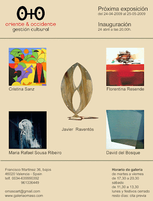
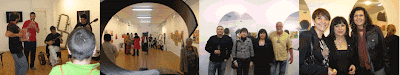
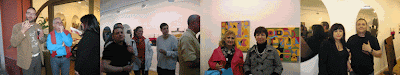

Exposición del 24-04-2009 al 25-05-2009
viernes, 24 de abril de 2009
{kind=link}

La Galería O+O de Valencia tiene el placer de presentar la muestra colectiva formada por las obras de David del Bosque, Florentina Resende, María Rafael, Xavier Raventós y Cristina Sanz. Una exposición, que podrá ser visitada del 24 de abril al 25 de mayo de 2009, donde escultura y pintura se mezclan y complementan.
David del Bosque realiza sus cuadros combinando materiales escultóricos principalmente reflectantes, creando un juego donde los reflejos y brillos crean un espacio innovador. Portugal estará representado en esta exposición por dos artistas, Florentino Resende y María Rafael, que desde su óptica particular nos adentran en una pintura reflexiva y enigmática de color, fuerza y luminosidad. Las esculturas de Xavier Raventós, con el hierro como verdadero protagonista, nos adentran en las inquietudes y sensaciones de su autor. Cristina Sanz nos ofrece una visión pictórica ligada a la abstracción geométrica, líneas de diferentes longitudes y direcciones que forman composiciones de colores planos y figuras geométricas.
{kind=link}

{kind=link}

DAVID DEL BOSQUE
David del Bosque (Valladolid, 1976) ha expuesto en galerías y centros de arte de Madrid, Salamanca, Valladolid, León, Santander, Firminy (Francia), Lisboa (Portugal), etc. Del Bosque es un pintor (y/o escultor) que fundamenta su obra en una práctica minimalista, mediante una reflexión sobre la relación que existe entre la forma, los materiales y el espacio que ocupa la obra. Si algo caracteriza su trabajo es la apuesta por materiales reflectantes, como el acero inoxidable, algo que relega a la pintura a un segundo plano. Juega con remarques de color o madera y elementos escultóricos, convirtiendo su obra en una especie de collage, cargado de ecos postindustriales, fruto de una abstracción geométrica pura y sobria. Existe una investigación en torno a los límites de la obra y la percepción en relación a la luz, que puede ser reflejada en sus materiales o retroiluminada formando parte de la pieza. El resultado estético es rotundo, estructuras que juegan con el reflejo, el vacío y la luz evocando un espacio infinito de carácter ilusorio.
FLORENTINA RESENDE
Artista portuguesa formada en pintura e Historia del Arte que ha expuesto sus obras de forma individual y colectiva en Portugal, España, Francia, Bélgica, Austria, Italia, Brasil, EE.UU. y Malta. Su trabajo reflexiona en torno al expresionismo y la abstracción con el color como principal protagonista. Manchas de colores que se yuxtaponen de forma sutil y ordenada. Estructuras organizadas a través de la intensidad del color, una combinación de espacios contrastados y mezclados de forma directa a la vez que delicada. Un resultado aparentemente casual donde se mezclan color y fuerza, formando composiciones armónicas de ritmos cromáticos. Colores cálidos, amarillos, ocres, anaranjados, rojos, tierras…, en un juego fluido de transparencias, que va desde los tonos que se desvanecen a la mayor intensidad. Óleos que desprenden una luminosidad cautivadora, donde los intensos colores dejan a un lado los trazos vagamente geométricos que componen la obra.
MARÍA RAFAEL
Artista nacida en Porto (Portugal) que ha expuesto sus obras en Portugal, España, Italia, Brasil, Malta y EE.UU. Su trabajo artístico va más allá de los límites de la plástica creando un juego de incertidumbres formado por un conjunto de sombras y figuras. Siluetas que emergen de la oscuridad o rostros femeninos que se vislumbran en composiciones abstractas. Dibujos de mujeres de ondulante trazado en un sinuoso juego de transparencias. Un trabajo atemporal lleno de enigmas y misterios, donde lo íntimo y etéreo dialoga con la melancolía y el silencio. Tonos grises, negros, blancos y azulados crean efectos de luminosidad llenos de quietud y contención. Sus pinturas son una búsqueda en el interior de la artista, una reflexión en busca de respuestas, dotando a sus creaciones de una gran sutilidad, un aire espiritual y simbólico. De esta manera vemos reflejados los sueños y vivencias personales de María Rafael, un trabajo artístico en forma de narración personal de la artista.
XAVIER RAVENTÓS
El escultor y fotógrafo barcelonés Xavier Raventós ha expuesto en ciudades como Barcelona, Girona, Tarragona, Zaragoza, Cadaqués, Beziers (Francia), Roma, entre otras. La materia fundamental escogida para su trabajo plástico es el hierro. En la mayoría de los casos se trata de hierros antiguos o viejos, partes de útiles y herramientas agrícolas que tienen una historia. Composiciones escultóricas que parten de la modificación, transformación y yuxtaposición de utensilios vividos, en los que podemos ver sus signos de vejez. Para Xavier la materia es un medio para canalizar los sentimiento y sensaciones del artista. El hierro representa la lucha, la dureza, el esfuerzo… Este elemento al igual que otros utilizados por el escultor, como puede ser la madera, es intervenido sin preparación ni boceto previo, en busca de una nueva forma de plasmar sensaciones. Sus piezas seducen con su fuerza, intensidad, su color y su tacto. Modelado y forjado de máquinas y utensilios que emanan texturas y olor a tierra labrada.
CRISTINA SANZ
Cristina Sanz (Valencia, 1955) es licenciada en bellas artes y filosofía y letras. Graduada en decoración y arte publicitario ha estudiado en L´École Nationale Supérieure des Beaux-Arts de Paris. Su obra ha sido exhibida en Madrid, Valencia, Alicante, Castellón, Almería, Roma, Cortona, etc. Sus composiciones están encuadradas dentro de la abstracción geométrica. Una búsqueda de la simplicidad del espacio interior del cuadro a través de la línea o la mancha de vivos e intensos colores. La propuesta de la pintora nos ofrece una serie de trazos horizontales y verticales que emanan planos de color puro. Utilizando elementos neutrales, normalmente geométricos (rectángulos, cuadrados, círculos, triángulos…), surge una composición lógicamente estructurada que ofrece claridad, precisión y objetividad a la obra. Bajo una apariencia simple de colores intensos y planos se esconde una sutil organización del espacio.